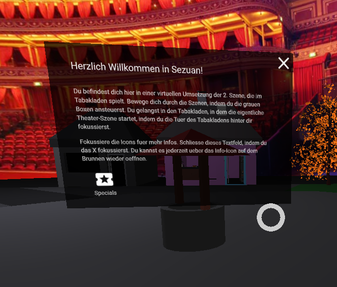
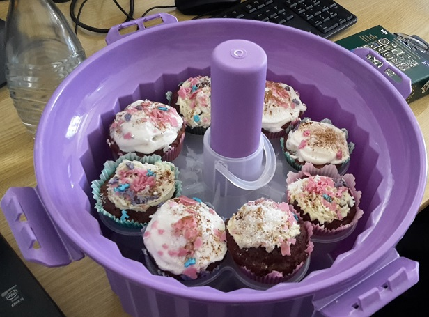

Zweites Semester
1
2
3
4
5
6
7
8
9
10
11
12
?
26.04.2017 - 03.05.2017
- aframe oder Unity - das ist hier die Frage
„Teambesprechung zur Vorgehensweise in diesem Semester“
- Besprechung zur Entscheidung, welche Technologie benutzt werden soll
- Aufstellen einer Pro- und Contraliste für bzw. gegen aframe und Unity
- Informieren über aktuellen Stand von aframe, welches sich über die vorlesungsfreie Zeit weiterentwickelt hat - neuer Stand: v0.5
03.05.2017 - 10.05.2017
- NELS - Never Ending Love Story
„Wir nutzen den zweiten Sprint zur Verbesserung unseres Projekts hinsichtlich Performance und Organisation“
- Arbeiten an der Performance: Verkleinerung der Anzahl an Polygonen unserer 3D-Modelle
- Überprüfung des Copyrights unserer verwendeten Tondateien/Bilder - Zusammenfassen dieser in einer gesammelten Textdatei
- Organisation mit unserem Scrum-Master
10.05.2017 - 17.05.2017
- Sieben Elefanten
„Entwicklung der ersten Interaktionsmöglichkeiten sowie die Verbesserung der Performanz“
- Einsprechen der Texte für das Minispiel und der Interaktion mit der Kerze
- Zusammenführung der HTML-Dateien
- Entwicklung des Minispiels (Spiellogik, Ein- und Ausblenden des GUIs)
- Entwicklung der Interaktion mit der Kerze (Erleuchtung, Überbeleuchtung und Abdunkelung des Raumes)
- Verlagerung des Cheats von der Kerze auf den Notizblock

17.05.2017 - 24.05.2017
- We need Cake!
„Implementierung weiterer Interaktionsmöglichkeiten sowie die Weiterführung des Minispiels. Verbesserung der User-Experience und Performanz.“
- Implementierung von Text-Tafeln
- Finalisierung der Zusammenführung der HTML-Dateien
- Testen, ob die Funktionalität der Tür nach der Zusammenführung gegeben ist
- Weiterführung der Entwicklung des Minispiels (Randomisierung der Position der Kuchen)
- Entwicklung der Interaktion mit dem Brunnen (Regen)
- Integration des Voice-Overs bei der Interaktion mit der Kerze
- Anschreiben des Schauspielhauses

24.05.2017 - 31.05.2017
- Wo ist Tom?
„Mehr Interaktion durch weitere Spielelemente und Regen“
- Interaktion mit dem Brunnen soll Regenschauer ermöglichen
- zwei weitere Spiele, Memory und eine Personensuche, sollen implementiert werden
- Versuch weiterhin bestehende Physik Probleme bei dem Zusammenführen der HTML Dateien in der Gruppe zu besprechen und zu löschen
- Final touch an Interaktionselementen von Sprint 4 ( z.B. u.A. Verbesserung des Gebäcks-Spawning für das Suchspiel)
31.05.2017 - 14.06.2017
- Github Unicorn 2.0
„Weiterführen der angefangenen Epics aus der vorigen Woche“
- Weiterführen der Inplimentation von:
- Memory
- Personensuche
- Regen
- Weiterer Versuch das Physics Problem beim Zusammenführen der HTML-Dateien zu lösen
- Vorbereitung der Präsentation
14.06.2017 - 21.06.2017
- [Wir] gehen in Flammen auf
„Festsetzung neuer Ziele für den Verlauf des restlichen Semesters“
- Recherchieren, ob Bewegung durch einfache Spracherkennung möglich ist
- Neue Ziele festsetzen
- Sammeln und beheben kleinerer Fehler; Optimierung der bestehenden Funktionen
21.06.2017 - 28.06.2017
- The Best is yet to come
„Bug fixes 2.0“
- Fehlerbehebung und Optimierung bestehender Funktionen

28.06.2017 - 05.07.2017
- We got Cake!
„Bug fixes 3.0“
- Fehlerbehebung und Optimierung bestehender Funktionen
05.07.2017 - 12.07.2017
- All ze bugs
„Bug fixes 4.0 und Implementierung der Spiel-Aufforderungen“
- Fehlerbehebung und Optimierung bestehender Funktionen
- Implementierung der Audio-Spuren der Spiel-Aufforderungen, von den verschiedenen Personen sowie die Animation dieser
- Erstellung der Zwischenstand-PDF
12.07.2017 - 19.07.2017
- Final Spakle 2.0
„Lösen der letzten Probleme und Testung der Szene auf Funktionalität“
- Fehlerbehebung und Optimierung bestehender Funktionen
- Testen der Szene für die Abschluss-Präsentation
19.07.2017 - 26.07.2017
- Final Countdown
„Verfassen des Ausblicks und das Testen der Funktionen“
- Verfassen des Ausblicks
- Testen der Szene für die Abschluss-Präsentation
Ausblick
„Ideen für einen weiteren Projektverlauf“
- Implementierung weiterer Interaktionsmöglichkeiten wie: Stadtführer, Integration eines Nachtmodus, Radio, etc.
- Integration einer Stimme aus dem Off
- Steuerung der Kamera via Spracherkennung
- Implementierung von Social VR
17.11.2016 – 24.11.2016
- Party Parrotting
“Das Team hat ein gemeinsames Verständnis der Nutzung aller Tools und das Projekt ist so aufgesetzt, dass mit einer iterativen Entwicklung begonnen werden kann.”
- Grundsätzliches Projektmanagement
- Recherchen zu A-Frame, Licht, Ton, Kamera, Interaktion und Bewegung
- Storyboard erstellen
- Github aufsetzen
- Google Drive für das Projekt
- Evaluierung von Tools zum Einsatz für das Projekt (Modellierung u.ä.)
- Exposé reflektieren
- Powerpoint-Präsentation für Sprint 1
24.11.2016 - 01.12.2016
- Deepwater Horizon
“Eine simple Szene ist angelegt, in der Funktionen von Kamera, Ton, Animation, Bewegung getestet werden können.”
- Testszene
- Testmodelle erstellen
- Sounds sammeln
- Skizze der Szene für grundsätzlichen Aufbau
- Offen gebliebene Frage zu Interaktion klären
- Funktionen in Testszene testen
01.12.2016 - 08.12.2016
- Apple & Curtains
"3D Modelle liegen vor"
- Erste Szene
- Modelle für erste Szene erstellen
- Github-Page aufsetzen
- Problem lösen: animierte Figur als .dae-Modell in Szene einbinden

08.12.2016 - 15.12.2016
- *Home* Run
"Personen werden animiert und die 'Bühnenwelt' zusammengesetzt"
- Modelle vervollständigen
- alle Modelle zu einer Szene zusammensetzen
- Figur animieren
- PowerPoint erstellen
- Webseite aktualisieren
15.12.2016 - 22.12.2016
- Pixar in a Frame
"Integration von Personen und Sound"
- Finale Anordnung und Skalierung der Kulisse in a-frame
- Einfügen der Geräusche
- Einsetzen erster Elemente in zeitlicher Abfolge
- Fertigstellen der Animationen
12.01.2017 - 19.01.2017
- Github Unicorn
"Fertigstellung des Environments und Umsetzung der neuen Figuren-Idee"
- Tonaufnahme klären
- Skalierung überprüfen
- Einrichten der Läden
- Figur-Sockel Lösung umsetzen
- Planung der nächsten Wochen
- Szenenabfolge austesten
- Repository auf PUBLIC stellen
- Bäckerei unbegehbar machen
- Beschränkung der Szene
- Wände undurchgängig machen
19.01.2017 - 26.01.2017
- Busy Bee
"Finalisierung der Szenenabfolge"
- Szenenabfolge
- Animationen verbessern
- Interaktionsmöglichkeiten klären
- Synchonisation der Szenenabfolge in dem Tabakladen und außerhalb
- Beschriftung der Läden

26.01.2017 – 02.02.2017
- "Shen Te! Es klopft!"
"Integration des Voice-Overs und der Beleuchtung der Szene"
- Integration erster Dialoge
- Ausleuchtung der Szene

02.02.2017 - 09.02.2017
- Final Sparkle
"Die letzten Dialoge werden eingebunden und die Szene wird auf restliche Fehler getestet"
- Zusammenfassen, welche Funktionen erstellt wurden, jedoch verworfen werden mussten und zukünftige mögliche Schritte festhalten
- Restliche Dialoge einbinden
- Alle Funktionen testen
Ausblick
"Ideen für den weiteren Projektverlauf"
- Umsetzung des restlichen Dialoges
- Verknüpfung der Außenszene mit der im Tabakladen, sodasss die Narration auch außerhalb des Ladens vortgeführt werden kann
- weitere Interaktionsmöglichketien mit Objekten, die für die Narration nicht relevant sind
- Vereinfachung des Narrationseinbindungsprozesses
- Einfügen weiterer Geräusche
- Fehlerbehebung der Funktion (zzt. auskommentiert), welche die nächste Person o.Ä aufleuchten lässt, die die Szene weiterführt.
Diese ermöglicht dem Nutzer eine bessere Verfolgung des Szenenablaufes sowie die reibungslose Gestaltung dessen. - Das Laden der Assets beschleunigen.
- Den VR-Modus beim Szenenwechsel beibehalten.